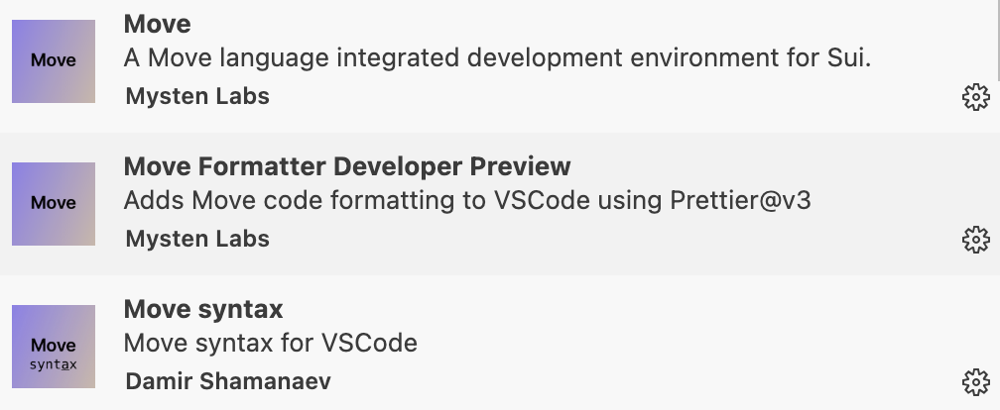

前言
课程目标与概述
课程目标
欢迎参加 Move CTF 挑战课程！本课程旨在帮助你掌握 Move 编程语言在 CTF（Capture The Flag）比赛中的应用，培养分析代码和解决安全挑战的能力。通过八节课的学习，你将能够：
- 熟练分析 Move 语言代码，识别常见漏洞和逻辑错误。
- 掌握 Move 在 CTF 中的典型题型，如整数溢出、资源管理和权限控制。
- 具备独立解决基础至中级 Move CTF 题目的能力。
- 为参加 Move 相关的 CTF 比赛做好准备，树立信心。
无论你是区块链开发者、安全研究者还是 CTF 爱好者，本课程都将为你提供独特的视角，探索 Move 语言的安全特性及其在竞赛中的潜力。
课程概述
- 课程结构：共八章节，从零开始进阶学习Move CTF。
- 学习路径：
- 从 CTF 简介和基础代码审计开始，逐步深入到高级漏洞和综合挑战。
- 每节课聚焦一个主题，配备一道 CTF 题目，循序渐进提升难度。
- 前提假设：你已通过基础 Move 语言学习（ HOH社区Move共学），熟悉基本语法、模块和资源概念。
- 预期成果：完成课程后，你将能独立分析 Move 智能合约代码，解决 CTF 挑战，并具备参加真实比赛的基本策略。
本课程结合理论与实践，鼓励动手操作和互动讨论。准备好迎接挑战了吗？让我们一起开启 Move CTF 的学习之旅！
预备知识与工具安装
预备知识
为了顺利完成本课程，你需要具备以下基础知识：
- Move 语言基础：
- 熟悉变量声明、基本数据类型（u8、u64、address 等）和控制流（if、while）。
- 理解模块（module）和资源（struct）的概念。
- 能够编写和运行简单的 Move 程序（如 Hello World）。
- 推荐资源：HOH社区Move共学 或 Sui Move Book。
- 区块链基础：
- 了解智能合约的基本概念（如存储、交易）。
- 对 Sui 区块链平台有初步认识。
- CTF 基础（可选）：
- 知道 CTF 比赛的基本形式将有助于更快上手。
如果以上知识点有欠缺，建议先完成基础学习再加入课程。本课程将直接聚焦 Move 在 CTF 中的应用，跳过语言基础教学。
工具安装
以下是你需要安装的工具，确保在第一节课前配置好开发环境：
-
Sui CLI：
- 用于编译、运行和调试 Move 代码。
- 安装步骤：
- Sui：参考 Sui CLI 安装指南。
- 验证：运行
sui -V检查安装成功。
-
VS Code + Move 插件：
-
提供代码高亮和语法检查。
-
安装步骤：
- 下载 VS Code。
- 在扩展市场搜索
Move或Sui Move，安装相关插件。

Move和Move syntax插件为提供代码高亮和语法检查，Move Formatter Developer Preview插件提供代码格式化。
-
环境验证
- 运行以下命令测试环境：
sui move new <path-to-move-project> && cd <path-to-move-project> && sui move build - 如果编译成功，说明环境配置正确。
准备好这些工具后，你就可以无缝进入课程实践环节。遇到安装问题？请提前联系课程团队或查阅相关文档。
第1节：CTF简介与Move应用
CTF比赛类型与Move应用场景
欢迎来到 Move CTF 挑战课程 的第一节！本节将带你走进 CTF（Capture The Flag，夺旗赛）的世界，了解其主要比赛类型，并探索 Move 编程语言在 Sui 区块链上的 CTF 应用场景。通过理论与实践结合，你将迈出学习 Move CTF 的第一步。
什么是CTF？
CTF 是一种网络安全竞赛形式，参与者通过解决技术挑战获取隐藏的 “flag”（通常是一串特定格式的字符串，如 CTF{xxx}），以证明他们的技能。CTF 起源于 1996 年的 DEFCON 安全大会，现已成为全球安全爱好者的热门活动。比赛类型主要分为以下两种：
1. Jeopardy模式
- 特点：解题模式，参与者面对一系列独立题目，涵盖密码学、逆向工程、Web 安全、区块链等类别。
- 流程：
- 题目提供线索（如代码片段、文件或服务器地址）。
- 选手分析问题，找到 flag 并提交。
- 根据解题数量和速度计分。
- 适合人群：初学者和个人选手，因其灵活性和低门槛广受欢迎。
- Move相关示例：分析一段 Sui 链上的 Move 智能合约代码，找出隐藏的 flag 或利用漏洞提取数据。
- 真实案例：
- 在 CTFtime 上，HackTheBox Cyber Apocalypse CTF 2024 Blockchain Challenges 包含区块链题目，要求选手审计智能合约。
- Sui 社区在 2024 年推出了 MoveCTF 2024，其中包括基于 Move 的解题挑战。
- 现状：当前 Move CTF（如 justCTF、MoveCTF）主要采用 Jeopardy 模式，题目以代码审计和逻辑分析为主。
2. Attack-Defense模式
- 特点：攻防对抗模式，团队在虚拟环境中同时攻击对手服务并防御自身系统。
- 流程：
- 每个团队维护一个包含漏洞的服务。
- 攻击对手以获取 flag，同时修补自身漏洞。
- 综合得分决定排名。
- 适合人群：进阶选手和团队，因其更接近真实网络攻防场景。
- Move相关示例：模拟 Sui 区块链网络，攻击对手的 Move 合约（如利用未授权访问漏洞窃取资源），同时保护自己的合约免受攻击。
- 现状：目前 Move CTF 未见公开的攻防模式案例，更多聚焦于解题形式的挑战。
CTF的吸引力
- 技能提升：涵盖编程、逆向、安全分析等多领域。
- 实战性：模拟真实安全场景，如区块链漏洞利用。
- 趣味性：解题过程如同解谜，充满成就感。
Move 在 CTF 中的应用
Move 是由 Facebook（现 Meta）为 Diem 区块链设计的一种编程语言，后被 Sui 公链采用并优化。它以资源导向和类型安全著称，灵感来源于 Rust。在 Sui 生态中，Move 用于编写智能合约和去中心化应用（DApp）。以下是 Move 在 CTF 中的主要应用场景：
1. 智能合约漏洞挖掘
- 背景：Sui 链上的 Move 合约是 CTF 题目的常见素材，选手需分析代码，寻找漏洞。
- 常见考点：
- 整数溢出/下溢：Move 未内置溢出检查，可能导致非法操作。例如，代币转移逻辑可能因溢出被绕过。
- 逻辑错误：如条件判断失误，导致意外行为。
- 示例：假设一个 Move 代币合约未检查整数加法的溢出，选手可通过构造大额输入转移超出余额的代币，flag 可能隐藏在交易事件中。
- Move特点：Move 的类型系统减少了某些传统漏洞（如重入攻击），但仍需关注逻辑和边界问题。
2. 资源管理挑战
- Move特性：Move 的资源（struct）具有线性类型特性，不可随意复制或丢弃，必须显式转移或销毁。这是 Sui 链上对象（Object）管理的核心机制。
- CTF应用：
- 题目可能涉及资源管理不当（如未销毁资源）导致的漏洞。
- 或通过资源转移逻辑的错误绕过限制。
- 示例：设想一个 Move 合约中，开发者忘记销毁旧资源，导致资源被重复使用，选手可利用此漏洞执行双重花费。
3. 代码逻辑逆向
- 背景：CTF 常要求选手理解代码意图，寻找隐藏信息。
- Move场景：
- flag 可能藏在注释、变量名或 Sui 链上的事件输出中。
- 或通过复杂逻辑（如循环、条件）计算得出。
- 真实案例：在 justCTF 2024 Teaser 的“The Otter Scrolls”题目（justCTF 2024）中，选手需分析 Sui Move 合约
Spellbook，调用cast_spell函数并传入参数vector[1, 0, 3, 3, 3]，触发 flag 输出。 - 总结：Move 的资源导向和类型安全特性为 CTF 提供了独特的技术挑战，目前通过 Jeopardy 模式吸引爱好者参与并提升 Sui 生态的安全意识。
学习目标
通过本节课，你将：
- 理解 CTF 比赛的基本形式（Jeopardy 和 Attack-Defense）。
- 认识 Move 在 Sui 链 CTF 中的应用场景。
- 通过实践，初步体验 Move 代码分析，迈出 CTF 第一步。
准备好了吗？接下来，我们将通过一个简单实践，体验 Move CTF！
实践：签到挑战
题目描述
在本实践环节，你将分析一个 Sui Move 签到合约，通过计算哈希值调用函数，获取隐藏的 flag。flag 是一个格式为 CTF{xxx} 的字符串，将在正确输入时通过事件输出。目标是体验 Move 代码分析和基本 CTF 解题流程。
示例代码
以下是待分析的 Move 合约：
github: chapter_1
module chapter_1::check_in {
use std::string::{Self, String};
use std::bcs;
use std::hash::sha3_256;
use sui::event;
//testnet
//PackageID:0x335297860a807291254b20f8a0dea30d72d5e17d2e6f8058e42d5b9c72f0f0ef
public struct FlagEvent has copy, drop {
sender: address,
flag: String,
success: bool
}
public entry fun get_flag(
flag: vector<u8>,
github_id: String,
ctx: &mut TxContext
) {
let mut bcs_input = bcs::to_bytes(&string::utf8(b"LetsMoveCTF"));
vector::append<u8>(&mut bcs_input, *github_id.as_bytes());
let expected_hash = sha3_256(bcs_input);
if (flag == expected_hash) {
event::emit(FlagEvent {
sender: tx_context::sender(ctx),
flag: string::utf8(b"CTF{WelcomeToMoveCTF}"),
success: true
});
} else {
event::emit(FlagEvent {
sender: tx_context::sender(ctx),
flag: string::utf8(b"Try again!"),
success: false
});
}
}
}
任务目标
阅读代码，理解哈希验证逻辑。
计算正确的 flag 输入并运行代码，获取 flag。
解题思路
1、找到如何获取flag的代码块：
##其中 `flag == expected_hash` 为获取flag的条件
if (flag == expected_hash) {
event::emit(FlagEvent {
sender: tx_context::sender(ctx),
flag: string(b"CTF{WelcomeToMoveCTF}"),
success: true
});
} else {
event::emit(FlagEvent {
sender: tx_context::sender(ctx),
flag: string(b"Try again!"),
success: false
});
}
2、如何满足 flag == expected_hash 条件？
let mut bcs_input = bcs::to_bytes(&string(b"LetsMoveCTF"));
vector::append<u8>(&mut bcs_input, *github_id.as_bytes());
let expected_hash = sha3_256(bcs_input);
代码块中 expected_hash 为 LetsMoveCTF + 用户输入的github_id 转换为bytes然后sha3_256 进行编码，所以flag传入也需要是expected_hash的这个结果。
3、进行解题
这里采用的是合约的方式进行解题。
github: solve_chapter_1 首先创建合约:
sui move new solve_chapter_1 && cd solve_chapter_1
修改 Move.toml 文件导入题目合约,如果是本地与题目同目录则添加 local 方式:
[package]
name = "solve_chapter_1"
edition = "2024.beta" # edition = "legacy" to use legacy (pre-2024) Move
# license = "" # e.g., "MIT", "GPL", "Apache 2.0"
# authors = ["..."] # e.g., ["Joe Smith (joesmith@noemail.com)", "John Snow (johnsnow@noemail.com)"]
[dependencies]
chapter_1 = { local = "../chapter_1" }
# For remote import, use the `{ git = "...", subdir = "...", rev = "..." }`.
# Revision can be a branch, a tag, and a commit hash.
# MyRemotePackage = { git = "https://some.remote/host.git", subdir = "remote/path", rev = "main" }
# For local dependencies use `local = path`. Path is relative to the package root
# Local = { local = "../path/to" }
# To resolve a version conflict and force a specific version for dependency
# override use `override = true`
# Override = { local = "../conflicting/version", override = true }
[addresses]
solve_chapter_1 = "0x0"
# Named addresses will be accessible in Move as `@name`. They're also exported:
# for example, `std = "0x1"` is exported by the Standard Library.
# alice = "0xA11CE"
[dev-dependencies]
# The dev-dependencies section allows overriding dependencies for `--test` and
# `--dev` modes. You can introduce test-only dependencies here.
# Local = { local = "../path/to/dev-build" }
[dev-addresses]
# The dev-addresses section allows overwriting named addresses for the `--test`
# and `--dev` modes.
# alice = "0xB0B"
然后编写解题合约 solve_chapter_1.move:
module solve_chapter_1::solve{
use chapter_1::check_in::get_flag;
use std::string;
use std::bcs;
use std::hash::sha3_256;
//testnet
//PackageID: 0xef6b4139ec1b0fda23e06c4a30c9e91150b72c38530e4517152e591001c5c433
public entry fun solve_get_flag(ctx: &mut TxContext){
let github_id = string::utf8(b"hoh-zone");
let mut bcs_input = bcs::to_bytes(&string::utf8(b"LetsMoveCTF"));
vector::append<u8>(&mut bcs_input, *github_id.as_bytes());
let flag_hash = sha3_256(bcs_input);
get_flag(flag_hash, github_id, ctx);
}
}
发布合约:
sui client publish
发布成功后调用合约：
sui client call --package 0xef6b4139ec1b0fda23e06c4a30c9e91150b72c38530e4517152e591001c5c433 --module solve --function solve_get_flag
最终结果可以看到终端输出的Events内成功获取flag：
╭───────────────────────────────────────────────────────────────────────────────────────────────────────╮
│ Transaction Block Events │
├───────────────────────────────────────────────────────────────────────────────────────────────────────┤
│ ┌── │
│ │ EventID: EjQiJnPZRqen1TSSkNiUaRaEQYSmhshJYHctn3uUt1V5:0 │
│ │ PackageID: 0xef6b4139ec1b0fda23e06c4a30c9e91150b72c38530e4517152e591001c5c433 │
│ │ Transaction Module: solve │
│ │ Sender: 0x90abb670800b4015229d30f5d010faef0c347e1d9650c9acebe2c012be7eb724 │
│ │ EventType: 0x335297860a807291254b20f8a0dea30d72d5e17d2e6f8058e42d5b9c72f0f0ef::check_in::FlagEvent │
│ │ ParsedJSON: │
│ │ ┌─────────┬────────────────────────────────────────────────────────────────────┐ │
│ │ │ flag │ CTF{WelcomeToMoveCTF} │ │
│ │ ├─────────┼────────────────────────────────────────────────────────────────────┤ │
│ │ │ sender │ 0x90abb670800b4015229d30f5d010faef0c347e1d9650c9acebe2c012be7eb724 │ │
│ │ ├─────────┼────────────────────────────────────────────────────────────────────┤ │
│ │ │ success │ true │ │
│ │ └─────────┴────────────────────────────────────────────────────────────────────┘ │
│ └── │
╰───────────────────────────────────────────────────────────────────────────────────────────────────────╯
第2节：基础代码审计
阅读Move代码与常见问题
阅读 Move 代码与常见问题
欢迎来到 Move CTF 挑战课程 的第二节！在第一节中，你通过一个签到挑战初步体验了 Move 代码的分析和解题流程。现在，我们将迈出审计的第一步，深入学习如何阅读 Move 代码并识别常见问题。本节将通过详细的理论讲解和实践环节，帮助你掌握基础审计技能，为后续更复杂的漏洞分析打下坚实基础。
1. 模块与函数
- 模块（Module）：
- Move 的代码组织单元，类似于传统语言中的合约或类。
- 格式：
module <address>::<name>，其中<address>是部署地址（如0x1），<name>是模块名。 - 包含结构体、常量和函数，定义合约的逻辑。
- 示例：
module chapter_2_test::counter { public struct Counter has key { id: UID, count: u64, } fun init(ctx: &mut TxContext){ transfer::share_object(Counter { id:object::new(ctx), count: 0 }); } public entry fun increment(counter: &mut Counter) { counter.count = counter.count + 1; } }
- 函数类型：
public entry fun：外部可调用的入口函数，通常是 CTF 题目中的交互点，接受&mut TxContext参数以获取交易上下文。public fun：公开函数，可被其他模块调用，但不直接作为交易入口。fun：私有函数，仅模块内部使用。- 示例：
public entry fun set_value(value: u64, tx: &mut TxContext) { /* 交易入口 */ } fun internal_add(a: u64, b: u64): u64 { a + b } // 内部辅助函数
2. 资源与所有权
- 资源（Resource）：
- Move 的核心特性，使用
struct定义，带有能力（has声明，如key、store）。 - 线性类型：资源不可复制（
copy）或丢弃（drop），必须显式转移或销毁。 - 示例：
public struct Coin has key { id: UID, value: u64 }
- Move 的核心特性，使用
- 所有权管理：
- 创建资源后，可通过
transfer::transfer（转移给地址）或transfer::share_object（共享对象）等处理。 - 示例：
public entry fun create(ctx: &mut TxContext){ let coin = Coin { id: object::new(ctx), value: 100 }; transfer::transfer(coin, tx_context::sender(ctx)); } - 未处理资源会导致编译错误，确保所有权清晰。
- 创建资源后，可通过
- Sui 特有机制：
- 对象（Object）：通过
UID（唯一标识符）管理，Sui 的基本数据单元。 - 共享对象：通过
transfer::share_object创建，允许多人操作，常用于 CTF 的共享状态。
- 对象（Object）：通过
3. 事件与输出
- 事件（Event）：
- 通过
event::emit输出日志，用于记录状态变化或 CTF 中的 flag 输出。 - 需定义事件结构体，具备
copy和drop能力。 - 示例：
public struct FlagEvent has copy, drop { sender: address, flag: vector<u8> } public entry fun get_flag(ctx: &mut TxContext){ event::emit(FlagEvent { sender: tx_context::sender(ctx), flag: b"CTF{example}" }); } - CTF 中，事件常是获取 flag 的关键途径。
- 通过
4. 变量与类型
- 基本类型：
u8、u64、u128：无符号整数。bool：布尔值。address：账户地址。vector<T>：动态数组。
- 引用：
&T：不可变引用，用于读取。&mut T：可变引用，用于修改。- 示例：
public entry fun increment(counter: &mut Counter) { counter.count = counter.count + 1; }
常见问题与漏洞类型
1. 未验证的输入
- 影响：
- 若
limit被设置为异常值（如2^64 - 1），后续逻辑可能失效。 - 在 CTF 中，可能通过异常输入绕过限制或提取 flag。
- 若
2. 逻辑错误
-
问题：条件判断、状态更新或流程控制错误，导致与设计意图不符的结果。
-
详细说明：
- Move 依赖开发者正确实现逻辑，无内置保护机制。
- 常见于条件遗漏、顺序错误或判断反转。
-
示例：
public struct AccessControl has key { id: UID, is_allowed: bool, threshold: u64 } public entry fun check_access(access: &mut AccessControl, score: u64) { if (score > 50) { // 应为 >= 50，但是设置为 >50 access.is_allowed = true; } } -
边界值 score = 50 被意外排除.
-
更复杂示例：
public entry fun update_state(state: &mut AccessControl, value: u64) { if (value < state.threshold) { state.is_allowed = false; // 可能应为 true } }- 若意图是“低于阈值激活”，条件与赋值不符。
-
影响：
- 可能允许未授权操作或阻止合法行为。
3. 权限控制不足
- 问题：函数未限制调用者身份，允许任何人执行敏感操作。
- 详细说明：
- Move 的 public entry fun 默认对所有地址开放，需手动验证 tx_context::sender.
- Sui 的共享对象尤其需注意权限。
- 示例：
public entry fun reset_counter(counter: &mut Counter) { // 未验证调用者 counter.count = 0; }- 任何人都可重置计数器。
- 更实际示例：
public struct SuiPool has key { id: UID, suiBalance: Balance<0x2::sui::SUI>, } public entry fun withdraw_commision( suipool: &mut SuiPool, amount: u64, to: address, ctx: &mut TxContext, ) { assert!(suipool.suiBalance.value() > amount, 1); let coin_balance = suipool.suiBalance.split(amount); let coin = from_balance(coin_balance, ctx); public_transfer(coin, to); }- 非管理者可提取余额。
- 影响：
- 未授权用户可能破坏合约状态或窃取资源。
4. 整数溢出/下溢
- 问题：在 Sui 中，Move 的整数运算（如 u64 的加法、减法）默认启用溢出检查，溢出或下溢会导致交易失败.
- 示例：
module counter::counter{ use sui::event; public struct Counter has key { id: UID, count: u64, } public struct CounterEmit has copy, drop{ count: u64, } fun init(ctx: &mut TxContext){ transfer::share_object(Counter { id:object::new(ctx), count: 0 }); } public entry fun add(counter: &mut Counter,amount: u64){ counter.count = counter.count + amount; event::emit(CounterEmit { count: counter.count }) } public entry fun reduce(counter: &mut Counter,amount: u64){ counter.count = counter.count - amount; event::emit(CounterEmit { count: counter.count }) } } - 影响：
- 若 counter + amount > 2^64 - 1 或 counter - amount < 0 会抛出 MovePrimitiveRuntimeError，交易失败，无法继续执行。
5. 资源管理不当
- 问题：资源未正确转移或销毁，导致编译错误。
- 示例：
public entry fun create_coin(ctx: &mut TxContext) { let coin = Coin { id: object::new(ctx), value: 100 }; } - 影响：
- 编译错误。
实践：识别与修复简单漏洞
题目描述
在本实践环节，你将审计一个简单的 Sui Move 合约 chapter_2::simple_challenge，目标是识别其中的漏洞并提出修复建议。合约实现了一个简单的“计数挑战”：用户可以通过提交计数（increment_count）来增加计数器，达到目标值后领取奖励（claim_reward）。奖励是共享的，任何人都可以领取。然而，合约存在一些隐藏漏洞，其中一个可能导致运行时报错，你需要找到这些漏洞，分析其影响，并提出修复建议。
示例代码
以下是 chapter_2::simple_challenge 模块的代码：
move
module chapter_2::simple_challenge {
use sui::object::{Self, UID};
use sui::transfer;
use sui::tx_context::{Self, TxContext};
use sui::event;
public struct Challenge has key {
id: UID,
owner: address,
count: u64,
target_count: u64,
reward: u64,
total_rewards_claimed: u64,
total_attempts: u64,
}
public struct RewardEvent has copy, drop {
reward: u64,
}
fun init(ctx: &mut TxContext) {
let challenge = Challenge {
id: object::new(ctx),
owner: tx_context::sender(ctx),
count: 0,
target_count: 10,
reward: 1000,
total_rewards_claimed: 0,
total_attempts: 0,
};
transfer::share_object(challenge);
}
public entry fun increment_count(challenge: &mut Challenge) {
challenge.total_attempts = challenge.total_attempts + 1;
challenge.count = challenge.count + 1;
}
public entry fun claim_reward(challenge: &mut Challenge, ctx: &mut TxContext) {
if (challenge.count >= challenge.target_count) {
challenge.total_rewards_claimed = challenge.total_rewards_claimed + challenge.reward;
event::emit(RewardEvent { reward: challenge.reward });
challenge.count = 0;
};
}
}
第3章：泛型类型安全
引言
在区块链智能合约开发中，安全性是核心关注点。Sui Move 作为一种专为高性能区块链设计的语言，通过其强大的类型系统为开发者提供了安全保障。然而，某些特性如果使用不当，可能引入严重漏洞。本章将聚焦 Sui Move 的泛型（Generics），深入探讨其在智能合约中的应用以及未检查泛型类型带来的安全风险。
1. Sui Move 中的泛型
1.1 什么是泛型？
泛型是编程语言中的一种机制，允许开发者编写可以处理多种类型的通用代码，从而提高代码的灵活性和复用性。在 Sui Move 中，泛型通过类型参数（如 <T>）实现，类型参数可以在结构体、函数或模块定义中使用，指定在运行时替换的具体类型，类型参数通过尖括号 <T> 定义。
例如，在合约中，VoteToken 结构体使用泛型 <T> 表示投票凭证的类型：
public struct VoteToken<phantom T> has key, store {
id: UID,
amount: u64,
}
<T>是类型参数，可以代表任何类型（如OfficialToken或攻击者定义的FakeToken）。phantom关键字表示<T>仅用于类型标记，不影响VoteToken的存储结构（即不会在链上存储<T>的实例）。has key, store表明VoteToken是一个链上对象，可以存储和转移。
泛型的核心优势是允许开发者编写通用的逻辑，而无需为每种类型重复实现代码。
1.2 泛型的语法与能力
在 Sui Move 中，泛型的使用受到类型能力的约束：
-
结构体泛型：如
VoteToken<phantom T>，类型参数<T>通常需要满足特定能力（如drop或store）。例如，phantom参数通常要求drop能力。 -
函数泛型：函数可以声明泛型参数，限制调用时传入的类型。例如：
public entry fun register_voter<T>(ctx: &mut TxContext) { let sender = tx_context::sender(ctx); let token = VoteToken<T> { id: object::new(ctx), amount: 100, }; public_transfer(token, sender); }<T>允许函数为任意类型创建VoteToken。- 调用者可以在调用时指定具体类型，如
register_voter<0x1::Token::Token>。
-
多类型参数：支持多个类型参数，顺序重要。例如：
public struct Pair<T, U> { first: T, second: U, } public fun new_pair<T, U>(first: T, second: U): Pair<T, U> { Pair { first, second } }<T, U>的顺序决定类型签名，Pair<u8, bool>和Pair<bool, u8>是不同类型，无法直接比较。
-
幻影类型参数：未在字段或方法中使用的类型参数，用于区分类型。例如：
public struct Coin<phantom T> { value: u64 } public struct USD {} public struct EUR {} #[test] fun test_phantom_type() { let coin1: Coin<USD> = Coin { value: 10 }; let coin2: Coin<EUR> = Coin { value: 20 }; // Unpacking is identical because the phantom type parameter is not used. let Coin { value: _ } = coin1; let Coin { value: _ } = coin2; }Coin<USD>和Coin<EUR>使用<T>区分不同货币，防止混淆。
-
能力约束：类型参数可通过能力约束（如
T: drop）限制行为。例如：public struct Droppable<T: drop> { value: T, } public struct CopyableDroppable<T: copy + drop> { value: T, }<T>必须具有指定能力，否则编译器报错。例如，NoAbilities结构体无能力，无法用于Droppable<NoAbilities>.
1.3 泛型的应用场景
在 Sui Move 智能合约中，泛型广泛应用于：
- 资源标识：如
VoteToken<T>，通过<T>区分不同类型的凭证（如治理代币、投票权）。 - 模块复用：编写通用逻辑，适配多种类型。例如，
vote<T>函数处理不同类型的VoteToken。 - 跨模块交互：泛型支持模块与外部类型交互，增加灵活性。
- 标准库：如
vector<T>（动态数组）和Option<T>（可选值），分别存储任意类型序列和表示可能缺失的值。 - 抽象实现：定义通用接口或行为，允许不同类型共享逻辑。
在样例合约中，泛型用于：
VoteToken<phantom T>：标记投票凭证的合法性。register_voter<T>和vote<T>：支持不同类型凭证的分配和使用。
然而，这种灵活性可能被攻击者利用，导致安全漏洞。
2. 未检查泛型类型的安全风险
2.1 泛型漏洞的本质
在 Sui Move 中，泛型类型是由调用者在运行时提供的“用户输入”。如果合约未验证泛型类型 <T> 是否符合预期，攻击者可以传入任意类型，导致以下安全问题：
- 伪造凭证：攻击者创建非法类型的对象（如
VoteToken<FakeToken>）绕过权限检查。 - 逻辑破坏：非预期类型导致合约状态异常，影响核心功能（如投票结果错误）。
- 资源滥用：攻击者利用伪造类型创建无效资源，干扰合约运行或耗尽 Gas.
在 VoteChain 合约中，register_voter<T> 和 vote<T> 函数未检查 <T> 类型，存在严重漏洞：
public entry fun register_voter<T>(ctx: &mut TxContext) {
let sender = tx_context::sender(ctx);
let token = VoteToken<T> {
id: object::new(ctx),
amount: 100,
};
public_transfer(token, sender);
}
public entry fun vote<T>(store: &mut VoteStore, token: &VoteToken<T>, proposal_id: u64) {
assert!(token.amount > 0, 1);
assert!(object_table::contains(&store.proposals, proposal_id), 2);
let proposal = object_table::borrow_mut(&mut store.proposals, proposal_id);
proposal.votes = proposal.votes + token.amount;
}
- 漏洞：
register_voter<T>允许任何<T>创建VoteToken，vote<T>未验证token的类型。 - 后果：攻击者可以伪造
VoteToken并投票，非法影响提案结果.
2.2 漏洞案例分析
假设 VoteChain 是一个去中心化投票系统，设计意图是只有持有 OfficialToken 类型凭证的用户才能投票。然而，由于泛 type漏洞，攻击者可以：
- 定义一个伪造类型
FakeToken:
module attacker::fake_token {
public struct FakeToken has drop {}
}
- 调用
register_voter<attacker::fake_token::FakeToken>获取VoteToken<FakeToken>. - 使用伪造的
VoteToken<FakeToken>调用vote，增加任意提案的票数。
这种攻击在区块链 CTF 中非常常见，因为泛型类型作为“隐形输入”，容易被开发者忽视。在现实世界的治理合约或 DeFi 协议中，类似漏洞可能导致：
- 非法用户控制投票结果。
- 资金分配错误。
- 协议治理被恶意操纵。
2.3 漏洞的影响
未检查泛型类型的漏洞可能导致：
- 完整性破坏：投票系统等依赖权限控制的合约可能被非法操作。
- 经济损失：在 DeFi 或 DAO 中，伪造凭证可能导致资金被窃取或错误分配。
- 拒绝服务：攻击者可能创建大量伪造对象，增加 Gas 消耗或干扰正常功能。
在 VoteChain 的场景中，攻击者通过伪造 VoteToken 可以：
- 使无效用户参与投票，破坏提案的公平性。
- 操纵提案结果，影响治理决策。
- 降低系统的可信度，损害用户信任。
3. 防御泛型漏洞
3.1 使用 std::type_name 进行类型检查
Sui Move 提供了 std::type_name 模块，用于在运行时检查类型的名称。开发者可以在合约中添加断言，确保泛型类型 <T> 符合预期：
use std::type_name;
public entry fun register_voter<T>(ctx: &mut TxContext) {
assert!(type_name::get<T>() == type_name::get<votechain::OfficialToken>(), 3);
let sender = tx_context::sender(ctx);
let token = VoteToken<T> {
id: object::new(ctx),
amount: 100,
};
public_transfer(token, sender);
}
type_name::get<T>()返回<T>的完整类型名称（包括模块和结构体名称，如votechain::OfficialToken）。- 断言确保
<T>是votechain::OfficialToken，否则中止交易。 - 错误码
3（建议定义为常量，如const E_INVALID_TYPE: u64 = 3;）便于调试。
这种方法通过限制 <T> 到白名单类型，有效防止伪造凭证。
3.2 设计安全合约的注意事项
- 最小化泛型使用：仅在必要时使用泛型，避免过度灵活性。
- 显式验证：对所有泛型参数进行运行时检查。
- 错误处理：定义清晰的错误码，便于调试和审计。
- 测试覆盖：编写测试用例，模拟攻击者伪造类型的情景。
了解泛型类型安全
引言
在区块链智能合约开发中，安全性是核心关注点。Sui Move 作为一种专为高性能区块链设计的语言，通过其强大的类型系统为开发者提供了安全保障。然而，某些特性如果使用不当，可能引入严重漏洞。本章将聚焦 Sui Move 的泛型（Generics），深入探讨其在智能合约中的应用以及未检查泛型类型带来的安全风险。
1. Sui Move 中的泛型
1.1 什么是泛型？
泛型是编程语言中的一种机制，允许开发者编写可以处理多种类型的通用代码，从而提高代码的灵活性和复用性。在 Sui Move 中，泛型通过类型参数（如 <T>）实现，类型参数可以在结构体、函数或模块定义中使用，指定在运行时替换的具体类型，类型参数通过尖括号 <T> 定义。
例如，在合约中，VoteToken 结构体使用泛型 <T> 表示投票凭证的类型：
public struct VoteToken<phantom T> has key, store {
id: UID,
amount: u64,
}
<T>是类型参数，可以代表任何类型（如OfficialToken或攻击者定义的FakeToken）。phantom关键字表示<T>仅用于类型标记，不影响VoteToken的存储结构（即不会在链上存储<T>的实例）。has key, store表明VoteToken是一个链上对象，可以存储和转移。
泛型的核心优势是允许开发者编写通用的逻辑，而无需为每种类型重复实现代码。
1.2 泛型的语法与能力
在 Sui Move 中，泛型的使用受到类型能力的约束：
-
结构体泛型：如
VoteToken<phantom T>，类型参数<T>通常需要满足特定能力（如drop或store）。例如，phantom参数通常要求drop能力。 -
函数泛型：函数可以声明泛型参数，限制调用时传入的类型。例如：
public entry fun register_voter<T>(ctx: &mut TxContext) { let sender = tx_context::sender(ctx); let token = VoteToken<T> { id: object::new(ctx), amount: 100, }; public_transfer(token, sender); }<T>允许函数为任意类型创建VoteToken。- 调用者可以在调用时指定具体类型，如
register_voter<0x1::Token::Token>。
-
多类型参数：支持多个类型参数，顺序重要。例如：
public struct Pair<T, U> { first: T, second: U, } public fun new_pair<T, U>(first: T, second: U): Pair<T, U> { Pair { first, second } }<T, U>的顺序决定类型签名，Pair<u8, bool>和Pair<bool, u8>是不同类型，无法直接比较。
-
幻影类型参数：未在字段或方法中使用的类型参数，用于区分类型。例如：
public struct Coin<phantom T> { value: u64 } public struct USD {} public struct EUR {} #[test] fun test_phantom_type() { let coin1: Coin<USD> = Coin { value: 10 }; let coin2: Coin<EUR> = Coin { value: 20 }; // Unpacking is identical because the phantom type parameter is not used. let Coin { value: _ } = coin1; let Coin { value: _ } = coin2; }Coin<USD>和Coin<EUR>使用<T>区分不同货币，防止混淆。
-
能力约束：类型参数可通过能力约束（如
T: drop）限制行为。例如：public struct Droppable<T: drop> { value: T, } public struct CopyableDroppable<T: copy + drop> { value: T, }<T>必须具有指定能力，否则编译器报错。例如，NoAbilities结构体无能力，无法用于Droppable<NoAbilities>.
1.3 泛型的应用场景
在 Sui Move 智能合约中，泛型广泛应用于：
- 资源标识：如
VoteToken<T>，通过<T>区分不同类型的凭证（如治理代币、投票权）。 - 模块复用：编写通用逻辑，适配多种类型。例如，
vote<T>函数处理不同类型的VoteToken。 - 跨模块交互：泛型支持模块与外部类型交互，增加灵活性。
- 标准库：如
vector<T>（动态数组）和Option<T>（可选值），分别存储任意类型序列和表示可能缺失的值。 - 抽象实现：定义通用接口或行为，允许不同类型共享逻辑。
在样例合约中，泛型用于：
VoteToken<phantom T>：标记投票凭证的合法性。register_voter<T>和vote<T>：支持不同类型凭证的分配和使用。
然而，这种灵活性可能被攻击者利用，导致安全漏洞。
2. 未检查泛型类型的安全风险
2.1 泛型漏洞的本质
在 Sui Move 中，泛型类型是由调用者在运行时提供的“用户输入”。如果合约未验证泛型类型 <T> 是否符合预期，攻击者可以传入任意类型，导致以下安全问题：
- 伪造凭证：攻击者创建非法类型的对象（如
VoteToken<FakeToken>）绕过权限检查。 - 逻辑破坏：非预期类型导致合约状态异常，影响核心功能（如投票结果错误）。
- 资源滥用：攻击者利用伪造类型创建无效资源，干扰合约运行或耗尽 Gas.
在 VoteChain 合约中，register_voter<T> 和 vote<T> 函数未检查 <T> 类型，存在严重漏洞：
public entry fun register_voter<T>(ctx: &mut TxContext) {
let sender = tx_context::sender(ctx);
let token = VoteToken<T> {
id: object::new(ctx),
amount: 100,
};
public_transfer(token, sender);
}
public entry fun vote<T>(store: &mut VoteStore, token: &VoteToken<T>, proposal_id: u64) {
assert!(token.amount > 0, 1);
assert!(object_table::contains(&store.proposals, proposal_id), 2);
let proposal = object_table::borrow_mut(&mut store.proposals, proposal_id);
proposal.votes = proposal.votes + token.amount;
}
- 漏洞：
register_voter<T>允许任何<T>创建VoteToken，vote<T>未验证token的类型。 - 后果：攻击者可以伪造
VoteToken并投票，非法影响提案结果.
2.2 漏洞案例分析
假设 VoteChain 是一个去中心化投票系统，设计意图是只有持有 OfficialToken 类型凭证的用户才能投票。然而，由于泛 type漏洞，攻击者可以：
- 定义一个伪造类型
FakeToken:
module attacker::fake_token {
public struct FakeToken has drop {}
}
- 调用
register_voter<attacker::fake_token::FakeToken>获取VoteToken<FakeToken>. - 使用伪造的
VoteToken<FakeToken>调用vote，增加任意提案的票数。
这种攻击在区块链 CTF 中非常常见，因为泛型类型作为“隐形输入”，容易被开发者忽视。在现实世界的治理合约或 DeFi 协议中，类似漏洞可能导致：
- 非法用户控制投票结果。
- 资金分配错误。
- 协议治理被恶意操纵。
2.3 漏洞的影响
未检查泛型类型的漏洞可能导致：
- 完整性破坏：投票系统等依赖权限控制的合约可能被非法操作。
- 经济损失：在 DeFi 或 DAO 中，伪造凭证可能导致资金被窃取或错误分配。
- 拒绝服务：攻击者可能创建大量伪造对象，增加 Gas 消耗或干扰正常功能。
在 VoteChain 的场景中，攻击者通过伪造 VoteToken 可以：
- 使无效用户参与投票，破坏提案的公平性。
- 操纵提案结果，影响治理决策。
- 降低系统的可信度，损害用户信任。
3. 防御泛型漏洞
3.1 使用 std::type_name 进行类型检查
Sui Move 提供了 std::type_name 模块，用于在运行时检查类型的名称。开发者可以在合约中添加断言，确保泛型类型 <T> 符合预期：
use std::type_name;
public entry fun register_voter<T>(ctx: &mut TxContext) {
assert!(type_name::get<T>() == type_name::get<votechain::OfficialToken>(), 3);
let sender = tx_context::sender(ctx);
let token = VoteToken<T> {
id: object::new(ctx),
amount: 100,
};
public_transfer(token, sender);
}
type_name::get<T>()返回<T>的完整类型名称（包括模块和结构体名称，如votechain::OfficialToken）。- 断言确保
<T>是votechain::OfficialToken，否则中止交易。 - 错误码
3（建议定义为常量，如const E_INVALID_TYPE: u64 = 3;）便于调试。
这种方法通过限制 <T> 到白名单类型，有效防止伪造凭证。
3.2 设计安全合约的注意事项
- 最小化泛型使用：仅在必要时使用泛型，避免过度灵活性。
- 显式验证：对所有泛型参数进行运行时检查。
- 错误处理：定义清晰的错误码，便于调试和审计。
- 测试覆盖：编写测试用例，模拟攻击者伪造类型的情景。
实践：利用泛型漏洞伪造投票凭证。
引言
以下是一个简单的投票系统的合约，每个地址可以领取100数量的coin然后进行投票，但是存在一些漏洞问题请尝试找出问题。
module votechain::vote {
use sui::object_table::{Self, ObjectTable};
use sui::coin::{Self,TreasuryCap};
use sui::transfer::{public_transfer, share_object, public_freeze_object};
use std::string::String;
use sui::table::{Self, Table};
public struct VOTE has drop {}
public struct Votecap has key {
id: UID,
cap: TreasuryCap<VOTE>
}
public struct Mintlist has key {
id: UID,
mintlist: Table<address, u64>
}
public struct VoteToken<phantom T> has key, store {
id: UID,
amount: u64,
}
public struct VoteStore has key {
id: UID,
proposals: ObjectTable<String, Proposal>,
}
public struct Proposal has key, store {
id: UID,
votes: u64,
}
fun init(waitness: VOTE,ctx: &mut TxContext) {
let name = std::string::utf8(b"letsctf");
let mintlist = Mintlist { id: object::new(ctx) , mintlist: table::new(ctx) };
let mut store = VoteStore {
id: object::new(ctx),
proposals: object_table::new(ctx),
};
let proposal = Proposal {
id: object::new(ctx),
votes: 0,
};
let (treasury_cap, meta) = coin::create_currency(waitness,6,b"VOTE", b"VOTE", b"", option::none(), ctx);
let vote_cap = Votecap { id: object::new(ctx), cap: treasury_cap };
object_table::add(&mut store.proposals, name, proposal);
public_freeze_object(meta);
share_object(vote_cap);
share_object(mintlist);
share_object(store);
}
public entry fun mint(
vote_cap: &mut Votecap,
mint_list: &mut Mintlist,
ctx: &mut TxContext
){
let addr = ctx.sender();
assert!(!table::contains(&mint_list.mintlist, addr), 1);
let coin = coin::mint(&mut vote_cap.cap, 100, ctx);
table::add(&mut mint_list.mintlist, addr, 100);
public_transfer(coin, addr);
}
public entry fun register_voter<T>(vote_coin: coin::Coin<T>, ctx: &mut TxContext) {
let amount = vote_coin.value();
assert!(amount == 100,1);
let sender = tx_context::sender(ctx);
let token = VoteToken<T> {
id: object::new(ctx),
amount: 100,
};
public_transfer(token, sender);
public_transfer(vote_coin, @0x0);
}
public entry fun vote<T>(token: &VoteToken<T>, store: &mut VoteStore, proposal_name: String) {
assert!(token.amount > 0, 1);
assert!(object_table::contains(&store.proposals, proposal_name), 2);
let proposal = object_table::borrow_mut(&mut store.proposals, proposal_name);
proposal.votes = proposal.votes + token.amount;
}
}
第4章：资源管理
引言
在区块链智能合约中，资源管理是确保系统安全的关键。Sui Move 使用对象（如代币、共享状态）来管理资源，通过 has key、Coin 和 share_object 提供强大的控制能力。然而，错误的资源管理可能导致漏洞，如代币重复使用。本章将介绍 Sui Move 的资源管理，以 VoteChain 投票系统为例，探讨未正确销毁投票代币的漏洞，学习如何利用和修复此类问题。
通过本章，你将：
- 了解 Sui Move 的对象和代币管理。
- 掌握资源管理漏洞，如未销毁代币导致重复投票。
- 学会在 CTF 中发现和修复资源管理问题。
我们将分析 chapter_4::vote 中的重复投票漏洞，实践操纵投票结果，并在任务中修复代币管理。
1. Sui Move 的资源管理
1.1 对象与代币
Sui Move 的资源以对象形式存储，具备唯一标识（UID）：
- 对象类型：需 has key（唯一性）和 has store（可存储）。
- 所有权：通过 public_transfer 转移，share_object 公开共享。
- 代币：Coin
表示代币，需销毁（coin::burn）或分割（coin::split）以防止重复使用。
在 VoteChain 中：
- Coin
是投票代币，代表投票权。 - VoteStore 是共享对象，存储提案票数。
1.2 资源管理漏洞
常见的资源管理漏洞包括：
- 未销毁代币：投票后未销毁 Coin
，允许重复使用。 - 错误转移：对象转移到错误地址，丢失控制。
- 共享对象滥用：未限制 share_object 的访问（第5章讨论）。
这些漏洞可能导致投票操纵或资源滥用。
1.3 漏洞案例
在 VoteChain 的 chapter_4::vote 中：
- vote 函数记录投票者，但未销毁或分割 Coin
。 - 攻击者可多次调用 vote，用同一代币增加票数，操纵提案结果。
- 危害：投票系统公平性丧失。
2. 防御资源管理漏洞
2.1 销毁或分割代币
- 在 vote 中销毁 Coin
（coin::burn）或分割已用部分（coin::split）。 - 示例：coin::burn(vote_coin);
2.2 验证状态
- 检查代币是否有效（如 vote_coin.value() > 0）。
- 记录投票状态（如 voters 列表），防止重复投票。
2.3 最小化共享对象
- 减少 share_object 的敏感数据，仅存储必要信息（如票数）。
- 使用用户拥有的对象（如代币）管理权限。
了解资源管理问题
引言
在区块链智能合约中，资源管理是确保系统安全的关键。Sui Move 使用对象（如代币、共享状态）来管理资源，通过 has key、Coin 和 share_object 提供强大的控制能力。然而，错误的资源管理可能导致漏洞，如代币重复使用。本章将介绍 Sui Move 的资源管理，以 VoteChain 投票系统为例，探讨未正确销毁投票代币的漏洞，学习如何利用和修复此类问题。
通过本章，你将：
- 了解 Sui Move 的对象和代币管理。
- 掌握资源管理漏洞，如未销毁代币导致重复投票。
- 学会在 CTF 中发现和修复资源管理问题。
我们将分析 chapter_4::vote 中的重复投票漏洞，实践操纵投票结果，并在任务中修复代币管理。
1. Sui Move 的资源管理
1.1 对象与代币
Sui Move 的资源以对象形式存储，具备唯一标识（UID）：
- 对象类型：需 has key（唯一性）和 has store（可存储）。
- 所有权：通过 public_transfer 转移，share_object 公开共享。
- 代币：Coin
表示代币，需销毁（coin::burn）或分割（coin::split）以防止重复使用。
在 VoteChain 中：
- Coin
是投票代币，代表投票权。 - VoteStore 是共享对象，存储提案票数。
1.2 资源管理漏洞
常见的资源管理漏洞包括：
- 未销毁代币：投票后未销毁 Coin
，允许重复使用。 - 错误转移：对象转移到错误地址，丢失控制。
- 共享对象滥用：未限制 share_object 的访问（第5章讨论）。
这些漏洞可能导致投票操纵或资源滥用。
1.3 漏洞案例
在 VoteChain 的 chapter_4::vote 中：
- vote 函数记录投票者，但未销毁或分割 Coin
。 - 攻击者可多次调用 vote，用同一代币增加票数，操纵提案结果。
- 危害：投票系统公平性丧失。
2. 防御资源管理漏洞
2.1 销毁或分割代币
- 在 vote 中销毁 Coin
（coin::burn）或分割已用部分（coin::split）。 - 示例：coin::burn(vote_coin);
2.2 验证状态
- 检查代币是否有效（如 vote_coin.value() > 0）。
- 记录投票状态（如 voters 列表），防止重复投票。
2.3 最小化共享对象
- 减少 share_object 的敏感数据，仅存储必要信息（如票数）。
- 使用用户拥有的对象（如代币）管理权限。
实践：分析利用资源管理漏洞
module chapter_4::vote {
use sui::coin::{Self, Coin, TreasuryCap};
use sui::transfer::{public_transfer, share_object, public_freeze_object};
use sui::vec_map::{Self, VecMap};
use sui::object_table::{Self, ObjectTable};
use std::string::String;
public struct VOTE has drop {}
public struct Votecap has key {
id: UID,
cap: TreasuryCap<VOTE>,
}
public struct Mintlist has key {
id: UID,
mintlist: VecMap<address, u64>,
}
public struct VoteStore has key {
id: UID,
proposals: ObjectTable<String, Proposal>,
voters: VecMap<address, bool>,
}
public struct Proposal has key, store {
id: UID,
votes: u64,
}
const E_INVALID_AMOUNT: u64 = 1;
const E_INVALID_PROPOSAL: u64 = 2;
const E_ALREADY_MINTED: u64 = 3;
fun init(witness: VOTE, ctx: &mut TxContext) {
let name = std::string::utf8(b"letsctf");
let (treasury_cap, meta) = coin::create_currency(
witness,
6,
b"VOTE",
b"VOTE",
b"",
option::none(),
ctx
);
let vote_cap = Votecap { id: object::new(ctx), cap: treasury_cap };
let mintlist = Mintlist { id: object::new(ctx), mintlist: vec_map::empty() };
let mut store = VoteStore {
id: object::new(ctx),
proposals: object_table::new(ctx),
voters: vec_map::empty(),
};
let proposal = Proposal {
id: object::new(ctx),
votes: 0,
};
object_table::add(&mut store.proposals, name, proposal);
public_freeze_object(meta);
share_object(vote_cap);
share_object(mintlist);
share_object(store);
}
public entry fun mint(
vote_cap: &mut Votecap,
mint_list: &mut Mintlist,
ctx: &mut TxContext
) {
let addr = tx_context::sender(ctx);
assert!(!vec_map::contains(&mint_list.mintlist, &addr), E_ALREADY_MINTED);
let coin = coin::mint(&mut vote_cap.cap, 100, ctx);
vec_map::insert(&mut mint_list.mintlist, addr, 100);
public_transfer(coin, addr);
}
public entry fun vote(
store: &mut VoteStore,
vote_coin: &Coin<VOTE>,
proposal_name: String,
ctx: &mut TxContext
) {
assert!(vote_coin.value() > 0, E_INVALID_AMOUNT);
assert!(object_table::contains(&store.proposals, proposal_name), E_INVALID_PROPOSAL);
let sender = tx_context::sender(ctx);
if (!vec_map::contains(&store.voters, &sender)) {
vec_map::insert(&mut store.voters, sender, true);
};
let proposal = object_table::borrow_mut(&mut store.proposals, proposal_name);
proposal.votes = proposal.votes + vote_coin.value();
}
}